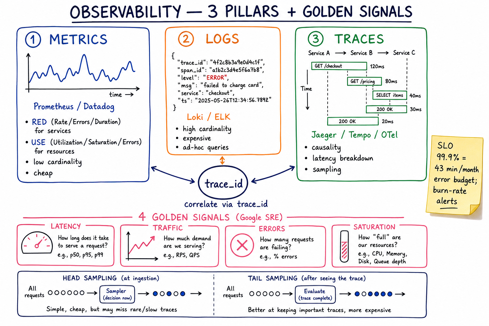

Observability // Concept
Metrics, logs, and traces — the three pillars that let you answer what, why, and where when something breaks at 3am. Plus the SRE methods (RED, USE, Golden Signals) and SLO/error-budget framing.

Three pillars (metrics, logs, traces) correlated via trace_id; Google SRE four golden signals (Latency, Traffic, Errors, Saturation); head vs tail sampling.
01 — The Problem
Monitoring tells you something is wrong (CPU at 95%, error rate up). Observability tells you why: which user, which call path, which dependency, which line. The system has to expose enough internal signal that you can answer questions you didn't think to ask when you wrote it.
Charity Majors: "Monitoring is for known unknowns. Observability is for unknown unknowns."
02 — Core Vocabulary
| Term | Meaning |
|---|---|
| Metric | Numeric measurement over time. Counters, gauges, histograms. Low cardinality. |
| Log | Discrete event with timestamp and context. High cardinality, expensive. |
| Trace | End-to-end record of a request as it crosses services. Made of spans. |
| Span | One unit of work in a trace (DB call, HTTP call, function); has start, duration, attributes. |
| trace_id / span_id | IDs that thread a request through every service log/metric/trace. |
| RED | Rate / Errors / Duration — per request-driven service. |
| USE | Utilization / Saturation / Errors — per resource (CPU, disk). |
| SLI / SLO / SLA | Indicator (number) / Objective (target) / Agreement (contract w/ penalty). |
| Error budget | 1 − SLO. How much "bad" you're allowed in the window. |
| Cardinality | Distinct values of a label. user_id as a tag = millions = disaster. |
| Sampling | Keeping only a fraction of traces to bound cost. |
03 — The Three Pillars
| Metrics | Logs | Traces | |
|---|---|---|---|
| Shape | Time-series numbers | Structured events | DAG of spans |
| Use | Dashboards, alerts | Forensics, search | Latency breakdown, causality |
| Cost | Cheap, fixed/cardinality | Expensive (ingest + storage) | Moderate w/ sampling |
| Cardinality | LOW (avoid user_id) | HIGH (anything goes) | HIGH per trace, sampled |
| Tools | Prometheus, Datadog, M3 | Loki, ELK, Splunk | Jaeger, Tempo, Honeycomb |
The connection is thetrace_id: a metric uptick → jump to logs filtered bytrace_id→ jump to the trace waterfall. All three pillars meet at the request ID.
04 — RED Method (request-driven services)
For every service, dashboard these three:
RATE requests/sec e.g., http_requests_total[1m]
ERRORS errors/sec e.g., http_requests_total{status=~"5.."}[1m]
DURATION p50, p95, p99 ms e.g., histogram_quantile(0.99, ...)
Alerts:
error rate > 1% for 5 min
p99 latency > SLO for 5 min
rate dropped > 50% (silent failure)
Authoring credit: Tom Wilkie (Weaveworks/Grafana). "If I see only three things per service, give me RED."
05 — USE Method (resources)
For every resource (CPU, memory, disk, network, queue), dashboard: UTILIZATION % busy time CPU at 80%, disk at 60% SATURATION queued/waiting work run queue length, GC pause, queue depth ERRORS hardware/driver errs ECC errors, dropped packets, EIO A resource is "in trouble" when saturation > 0 even at low utilization.
Authoring credit: Brendan Gregg (Netflix). RED + USE = "request side + resource side" coverage.
06 — Google SRE Four Golden Signals
| Signal | Meaning |
|---|---|
| Latency | Time to serve. Distinguish latency of successful vs failed requests. |
| Traffic | Demand on the system (req/s, MB/s, sessions). |
| Errors | Rate of requests that fail (explicit + implicit, e.g., 200 with wrong body). |
| Saturation | How "full" your service is — the resource closest to its limit. |
Golden Signals ≅ RED + Saturation. RED for what callers see, Saturation for what's about to break.
07 — The Cardinality Trap
Prometheus / time-series databases store
metric_name{label1=v1, label2=v2, ...} -> series
Each unique combination of labels = a separate series in memory.
DISASTER:
http_requests_total{user_id="u-12345"} # millions of users
http_requests_total{path="/items/4f29ab2c"} # path with UUID
http_requests_total{request_id="..."} # unique per call
You created a 100M-series cardinality explosion. The agent OOMs.
Storage cost goes 1000×. Queries time out.
RULE: tags must be from a SMALL bounded set (status, region, service, route).
Anything unbounded (user_id, trace_id, request_id, full URL) goes in
LOGS or TRACES, never metric labels.
If you need to find "which user is slow", use traces (sampled) or logs filtered by user_id, not metrics.
08 — Trace Sampling: Head vs Tail
| Head sampling | Tail sampling | |
|---|---|---|
| When decided | At trace start (root span) | After trace completes (all spans seen) |
| How | Random N% kept; decision propagates | Buffer spans, then decide: keep if slow, errored, or rare |
| Pros | Cheap, simple, no buffering | Keeps the interesting traces — errors, p99 latencies |
| Cons | May miss a rare bug | Needs collector w/ buffer (OTel Collector tail-sampling processor) |
Production answer: head sample at 1% for steady traffic + tail sample 100% for errors and high-latency outliers. Best of both.
09 — Structured Logs
BAD:
log.info("User 42 placed order 99 for $12.50")
GOOD:
log.info("order placed",
user_id=42, order_id=99, amount=12.50,
trace_id=ctx.trace_id, span_id=ctx.span_id,
service="checkout", env="prod")
-> JSON line you can grep, aggregate, join.
Required fields on every log line:
timestamp (RFC3339, UTC)
level (debug/info/warn/error)
service, version, region, env
trace_id, span_id (when in request context)
msg (human-readable summary)
Log levels — budget
| Level | Use for | Cost |
|---|---|---|
| ERROR | Something broke that needs human attention | Always kept |
| WARN | Recoverable anomaly | Always kept |
| INFO | Notable business events (order placed, login) | Kept ~14 days |
| DEBUG | Engineer-facing detail | Off in prod, on for canary or via dynamic logging |
10 — SLO Design & Error Budgets
SLI: a measurable proxy for happiness
e.g., "fraction of HTTP 200 in < 200ms"
SLO: target for SLI over a window
"99.9% of requests succeed in < 200ms over rolling 28 days"
Error budget = 1 - SLO over the window
99.9% over 28 days = 40.3 min of allowed badness
99.99% = 4.0 min
99.999% = 24 sec <- almost no one needs this
Burn-rate alerting
Don't alert on the SLO itself ("hey, we used 100% of budget"). Alert on the burn rate: if you're burning 14× faster than allowed, you'll exhaust the budget in 2h. That's the page.
multi-window burn-rate alert (Google SRE):
page if fast_window(5min) burn rate > 14x
AND slow_window(1h) burn rate > 7x
ticket if 6h burn rate > 1x
SLO sets the conversation budget between SRE and product: if you're inside budget, ship features faster; if you're out, freeze and fix reliability.
11 — OpenTelemetry (the standard)
- Single SDK for metrics + logs + traces in every major language
- W3C Trace Context headers (
traceparent,tracestate) propagate trace_id across HTTP/gRPC - OTel Collector is the agent: receives OTLP, processes (filter, sample, batch), exports (Prom, Tempo, Loki, Datadog, ...)
- Vendor-neutral — switch backends without touching app code
Service A -> Service B
trace_id propagated via header:
traceparent: 00-{trace_id}-{span_id}-01
App -> OTel SDK -> OTLP -> OTel Collector -> { Prometheus,
Tempo/Jaeger,
Loki,
Datadog (HTTP)... }
12 — Where It Shows Up
Every system — observability is the floor, not the ceiling. Worth calling out:
| System | Angle |
|---|---|
| Payment System | SLOs on success rate; alert on per-bank failure spike |
| Job Scheduler | Firing lag p99, DLQ depth, success rate per tenant |
| Message Queue | Consumer lag, ISR shrinks, under-replicated partitions |
| Failure Modes | Detection latency = MTTR floor; burn-rate alerting |
| Service Mesh | Mesh auto-emits RED + traces for every hop |
| Security | Audit log is observability for who-did-what |
13 — Pitfalls
- Putting
user_idin a metric label → cardinality blowup, ingest OOM. - Free-text logs — can't aggregate or query; always emit JSON.
- No trace_id propagation — logs can't be correlated across services.
- Sampling head-only — you miss the rare error traces you most need.
- Alerting on raw metrics, not SLO burn rate — alarm fatigue + missed real incidents.
- Dashboards as the only interface — you can't dashboard unknown questions; logs + traces must be queryable ad-hoc.
- 5xx is not the only error — 200 with empty body is also a bug. Define "success" at the business level.
- "Just log everything" — ingest cost becomes the largest line item. Sample, sample, sample.
14 — Interview Q&A
What's the difference between monitoring and observability?
Walk me through RED vs USE.
Why is high-cardinality data dangerous in metrics?
user_id with 10M users creates 10M series. Memory, storage, query cost scale linearly — agents OOM, queries time out. Bounded labels only (status, region, route); high-cardinality goes in logs or traces, which are stored differently (inverted indices, columnar).How do you correlate metrics, logs, and traces?
trace_id. Propagate it via W3C traceparent header across all hops; include it as a structured field in every log line and exemplar in metric histograms. Click a spike on a Grafana panel → jump to logs filtered by exemplar trace_id → jump to the Tempo/Jaeger trace waterfall. Three pillars connected.How do you decide on a sensible SLO?
POST /checkout returning 2xx in <500ms from the LB perspective").How do you sample traces in production?
What's an error budget and how does it change engineering?
What is OpenTelemetry and why does it matter?
How do you alert without causing fatigue?
How do you trace a request across an async boundary (Kafka, jobs)?
traceparent header to the Kafka record; consumer starts a new span linked to it via span_link (not parent-child, since it's async). OTel has native support for this. Same approach for job schedulers — the trace_id is part of the job payload.SDE-2 vs SDE-3 differentiator?
| SDE-2 | SDE-3 |
|---|---|
| Metrics, logs, dashboards, basic alerts | + RED+USE+Golden Signals framing, cardinality math, head+tail sampling, SLO design + multi-window burn-rate alerts, error-budget policy, OTel + W3C Trace Context, async trace propagation, audit observability for security, alarm-fatigue economics |